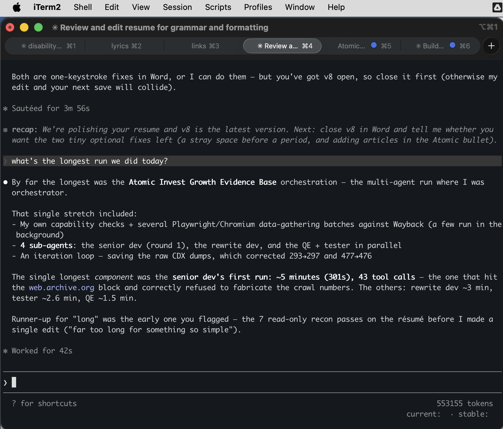
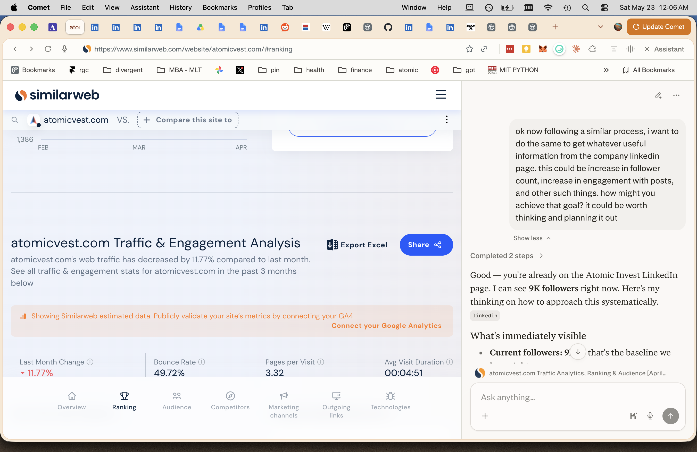

Clarity Pediatrics · Growth Engineer — work sample
How I rebuilt Atomic Invest's website from positioning to lead funnel.
Atomic Invest sells embedded investing, savings, and brokerage infrastructure that fintechs, banks, and consumer apps build into their own products. When I joined as the solo Product Marketing lead, the company was years in but still running its original Series-A-era site.
The primary CTA, "Request access," implied a gated, invite-only product rather than an open sales conversation. The form behind it lived on a third-party tool that added a vendor dependency and a context-switch mid-funnel. The positioning named an internal product line, not the fintechs and financial institutions Atomic was actually selling to. The site wasn't doing its job.
I treated the website as Atomic's primary acquisition surface and shipped a complete rebrand — positioning, copy, information architecture, visual identity, and the lead funnel.
/access/→native 3-step qualification flow at /formThe new /form replaced the third-party tool and added a "how did you hear about us?" field — so the form didn't just capture leads, it tracked which channels were driving qualified inbound. The funnel was built to be measured.
I didn't start with pixels. I treated it as a strategy-and-clarity problem and started with three inputs:
From those inputs I built the information architecture, wrote the copy, and worked with design to execute the identity and UX — all aimed at one thing: cutting interpretive friction, so the right prospect understands what Atomic does, who it's for, and why to engage, as fast as possible.
The clearest metrics live in Google Analytics and the CRM — sessions, homepage CTA click-through, form start and completion, qualified inbound, and lead-source mix.
While I had access to GA and the CRM, the funnel improved after the rebrand — form starts, completions, and qualified inbound all moved up. I can't export those figures now, so I state it as a first-hand, directional observation, and I'm glad to walk through specifics in conversation.
This page itself illustrates how I work. I designed, built, and deployed it in a single session.
Additional examples:

